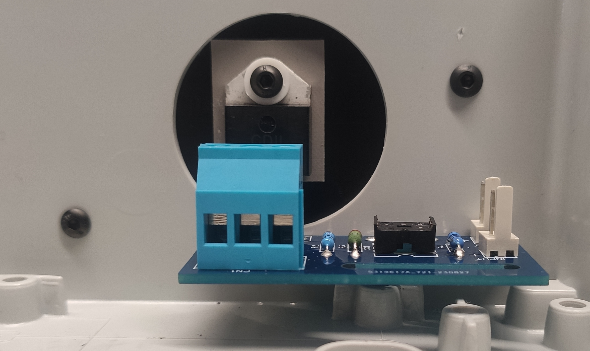
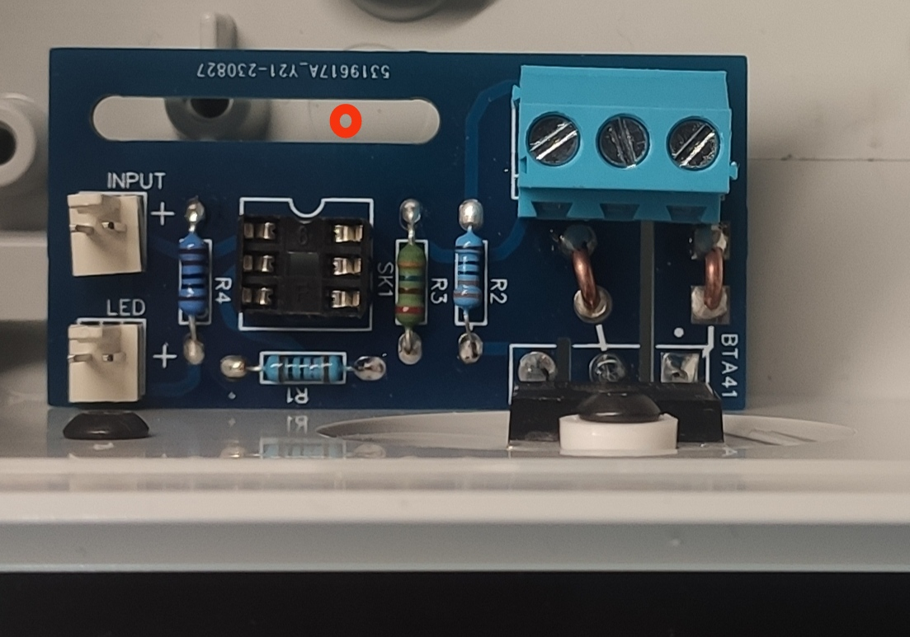
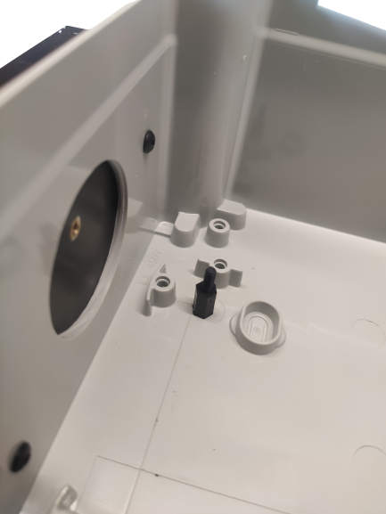
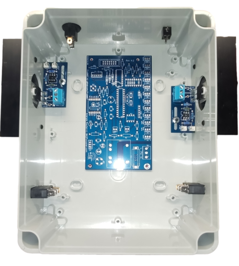

Préparation du boîtier
Les boîtiers utilisés pour ce routeur sont de type industriel, fabriqués en ABS avec un retardateur de flamme. Ils sont conformes aux normes de sécurité industrielles.
En fonction du nombre de sorties à contrôler, deux références peuvent être fournies :
Thalassa NSYTBS24198 : ce boîtier convient pour les configurations à 1 ou 2 sorties, pouvant être installées en mode portrait ou paysage.
Thalassa NSYTBS29248 : ce boîtier convient pour les configurations à 3 ou 4 sorties, à installer uniquement en mode portrait.
Il y a peu de contraintes à respecter, voici la liste :
Le presse-étoupe doit être installé sur le côté inférieur pour protéger contre la poussière et les éventuels ruissellements.
Le·s dissipateur·s doit·vent être installé·s sur le·s côté·s vertical·aux. C’est impératif pour assurer un bon refroidissement.
Pour le reste — témoins LED, etc. — ils peuvent être montés n’importe où, selon vos préférences !
Cependant, ce guide décrira l’implantation la plus classique.
Étapes à réaliser
Perçage pour le·s dissipateur·s Vous devrez percer 2 trous de 3 mm de diamètre et un autre de 35 mm de diamètre. Voir Perçage du boîtier.
Perçage pour le ou les étage·s de sortie·s triac Vous devrez percer 1 trou de 3 mm de diamètre.
Perçage pour la carte-mère Vous devrez percer 4 trous de 4 mm de diamètre.
Perçage pour les presse-étoupe Vous devrez percer des trous de 20 mm de diamètre.
Perçage pour le·s prise·s jack Vous devrez percer des trous de 8 mm de diamètre.
Perçage pour le·s témoin·s LED et pour l’afficheur 4 Digits (Uniquement pour le routeur monophasé) Vous devrez percer des trous de 8 mm de diamètre.
Perçage pour le bouton marche (Uniquement pour le routeur monophasé) Vous devrez percer un trou de 20 mm de diamètre.
Perçage pour le bouton reset (Uniquement pour le routeur triphasé) Vous devrez percer un trou de 13 mm de diamètre.
Outils nécessaires
une perceuse à colonne si possible, sinon n’importe quelle perceuse.
Foret de 3 mm
Foret de 4 mm
Foret de 8 mm
Foret ou fraise de 20 mm
Fraise de 35 mm
Perçage pour le·s dissipateur·s
Veuillez vous référer à la section Perçage du boîtier.
Perçage pour chaque étage de sortie triac
Le triac de la carte de sortie doit être plaqué intégralement et fixé sur le dissipateur en façade du boitier. L’étage de sortie doit aussi être fixé au fond du boitier à la bonne hauteur pour être en accord avec le point de fixation du triac.
Pour ce faire, il faut fixer le dissipateur sur le boitier préalablement préparé et fixé l’étage de sortie sur celui-ci par l’intermédiaire du triac.
Vu du dessus, il est possible de pointer le futur perçage à l’endroit le plus adéquat dans le trou oblong.
{kind=link}

Fixation dissipateur / étage de sortie
{kind=link}

Pointage
Pour percer, l’étage de sortie doit être retiré. Le perçage doit être effectué avec un foret de 3 mm de diamètre.
Pour ajuster la hauteur de la carte de sortie, un plot en plastique de 10 mm de haut est installé à l’aide d’une vis M3 en plastique.
{kind=link}

Plot
Perçage pour la carte-mère
Une fois les étages de sortie correctement positionnés, vous pouvez placer la carte-mère de manière à ne pas entraver les futurs branchements et autres équipements. En utilisant la même méthode, vous pouvez marquer et percer le boîtier aux dimensions appropriées.
{kind=link}

Pointage carte mère
Pour éviter qu’elle ne repose sur les points de fixation au fond du boîtier, un plot en plastique de 10 mm de hauteur est installé à l’aide d’une vis M4 sur tous les trous percés, de la même manière que pour l’étage de sortie.